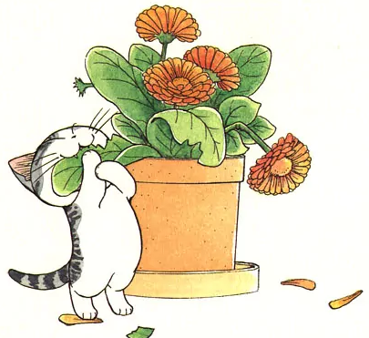

Eating
Cats are obligate carnivores, and do not do well on vegetarian diets. However, many cats may chew a little bit of grass to get rid of intestinal parasites.
Cats cannot taste sweets at all. They smell for food and taste amino acids instead. The digestive system of cats is not efficient for food with high sugar content (candies, cookies) or even carbohydrates (rice, potato)
